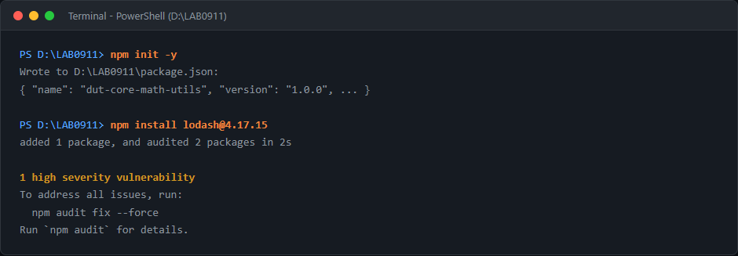
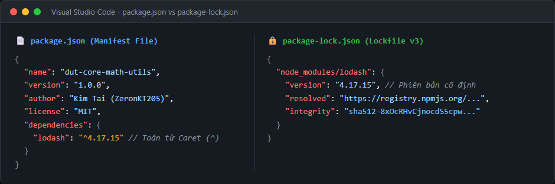
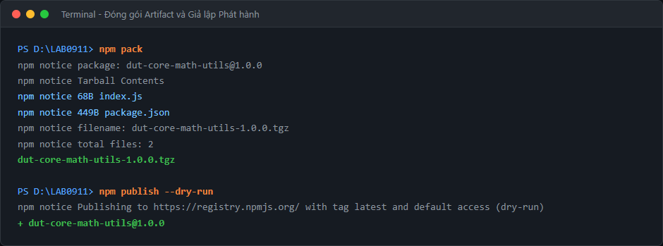
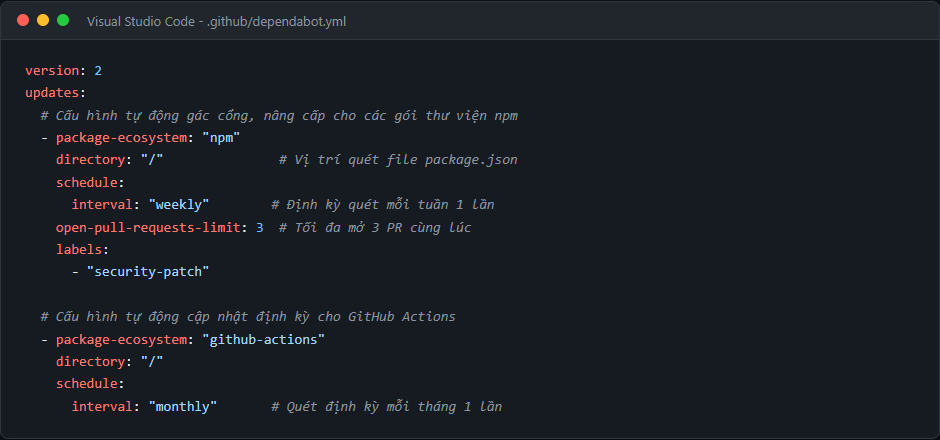
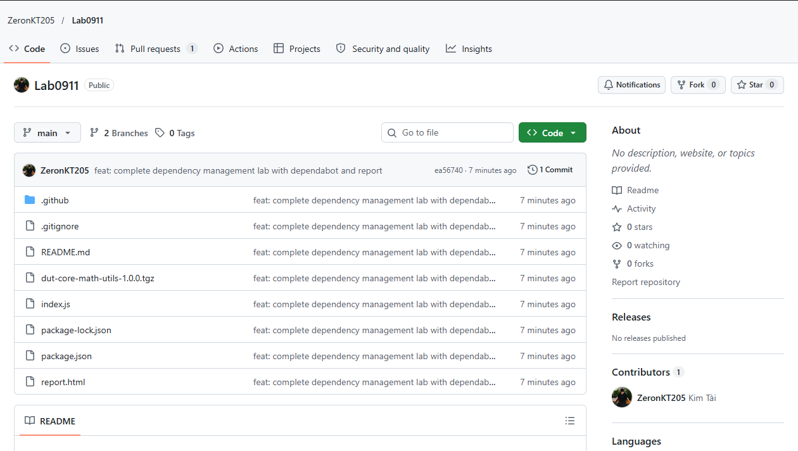
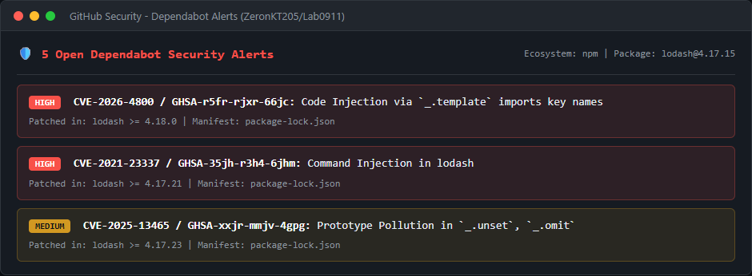
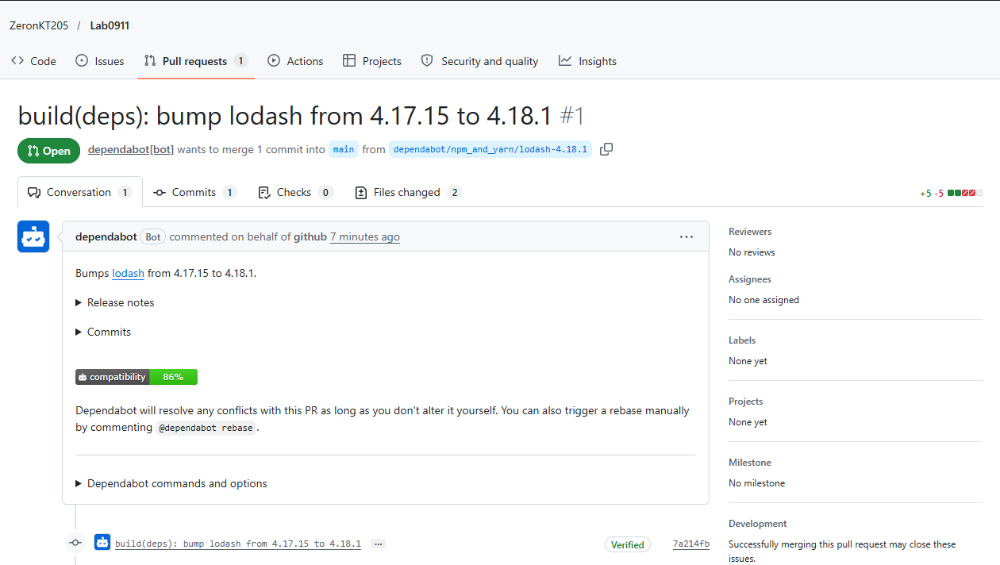

Manifest Package
dut-core-math-utils
v1.0.0 (SemVer Standard)
Khóa môi trường
package-lock.json
Lockfile v3 + SHA-512 Hash
Phụ thuộc thử nghiệm
lodash@^4.17.15
5 CVE Security Alerts
Robot gác cổng
Dependabot PR #1
Auto-created by bot
BƯỚC 1
Cấu hình Manifest, Bản chất Version Ranges và Lockfile
Khởi tạo dự án bằng npm init -y và tiến hành cài đặt thư viện phụ thuộc ở phiên bản cũ lodash@4.17.15 để kiểm tra phản ứng của hệ sinh thái quản lý phụ thuộc:

📸 Hình 1.1: Lệnh khởi tạo Manifest và cài đặt thư viện phụ thuộc lodash@4.17.15 hiển thị cảnh báo lỗ hổng bảo mật.
📄 Manifest File (package.json)
File định danh và khai báo khoảng phiên bản phụ thuộc SemVer:
- Toán tử Caret (^):
"^4.17.15" ra lệnh: "Khi tải lại gói, tự động cập nhật bản PATCH (4.17.x) hoặc MINOR (4.x.x) cao nhất, miễn là dưới 5.0.0".
- Khai báo thông tin bản quyền:
MIT, tác giả và publishConfig chuẩn.
🔒 Bản chất Lockfile (package-lock.json)
Đóng băng tuyệt đối 100% cây phụ thuộc và mã băm mật mã:
- Mã băm SHA-512 (integrity): Ngăn chặn tấn công đầu độc mã nguồn và sai lệch phiên bản giữa các máy lập trình viên.
- Lệnh
npm ci: Khi làm việc nhóm và triển khai CI/CD, chỉ cần chạy npm ci để tải chính xác bản đã khóa.

📸 Hình 1.2: Đối chiếu giữa Manifest file (khoảng phiên bản SemVer) và Lockfile (khóa cứng phiên bản + mã băm integrity sha512).
⚠️ Lỗ hổng có chủ đích: Thư viện lodash@4.17.15 có các lỗ hổng đã được công bố (như Prototype Pollution, Code Injection). Đây là tiền đề để kiểm thử khả năng rà soát chuỗi cung ứng tự động ở Bước 3.
BƯỚC 2
Đóng gói Artifact & Giả lập Phát hành (npm pack & dry-run)
Đóng gói thư viện tiện ích dut-core-math-utils thành linh kiện phần mềm tiêu chuẩn để chuẩn bị phát hành lên kho npm Registry toàn cầu:

📸 Hình 2.1: Đóng gói Artifact bằng lệnh `npm pack` (nén ra tệp .tgz 496 Bytes sạch rác) và kiểm tra phát hành an toàn với `--dry-run`.
📦 Đóng gói Artifact cục bộ (`npm pack`)
- Hệ thống nén mã nguồn thành
dut-core-math-utils-1.0.0.tgz.
- Chỉ đóng gói 2 tệp cần thiết:
index.js và package.json.
- Toàn bộ thư mục nặng
node_modules/ tự động bị loại bỏ, bảo vệ băng thông và tính sạch sẽ của gói artifact.
🚀 Giả lập phát hành (`npm publish --dry-run`)
- Tham số
--dry-run giúp mô phỏng toàn bộ luồng phát hành lên https://registry.npmjs.org/.
- Giúp kiểm tra cấu hình pháp lý, quyền truy cập và file hợp lệ mà không thực sự tải lên chợ, an toàn tuyệt đối khi thực hành.
BƯỚC 3
Kích hoạt Robot Dependabot Tự Động Hóa Chuỗi Cung Ứng
Thiết lập bản thiết kế robot tại thư mục .github/dependabot.yml nhằm bảo vệ chuỗi cung ứng phần mềm (Software Supply Chain Security):

📸 Hình 3.1: Tệp cấu hình .github/dependabot.yml điều phối lịch quét và tự động mở Pull Request nâng cấp.
| Hệ sinh thái |
Thư mục quét |
Tần suất quét |
Giới hạn PR |
Nhãn tự động |
npm |
/ (Root) |
Hàng tuần (weekly) |
3 Pull Requests |
security-patch |
github-actions |
/ (Root) |
Hàng tháng (monthly) |
Mặc định |
Tự động |
NGHIỆM THU
Kết Quả Thực Tế Trên GitHub Repository

📸 Hình 4.1: Kho lưu trữ GitHub chính thức tại github.com/ZeronKT205/Lab0911 chứa đầy đủ mã nguồn, lockfile và artifact.

📸 Hình 4.2: Hệ thống GitHub Dependabot phát hiện 5 cảnh báo bảo mật từ lodash@4.17.15 (bao gồm CVE-2026-4800, CVE-2021-23337).

📸 Hình 4.3: Robot Dependabot tự động mở Pull Request #1 ("bump lodash from 4.17.15 to 4.18.1") với tỷ lệ tương thích 86%.
🎉 Kết quả thực nghiệm hoàn hảo: Ngay sau khi đẩy mã nguồn lên GitHub, robot Dependabot đã tự động rà soát, phát hiện phiên bản lodash@4.17.15 có lỗ hổng bảo mật và tự động mở Pull Request #1 để nâng cấp lên 4.18.1 mà không cần sự can thiệp thủ công của lập trình viên!
🎓 Bài Học & Đánh Giá Bài Lab
- Toán tử SemVer Caret (^) cho phép linh hoạt vá lỗi nhưng có thể vô tình đón nhận rủi ro nếu thư viện bên ngoài dính lỗi.
- Lockfile (`package-lock.json`) là bắt buộc trong mọi dự án phần mềm chuyên nghiệp để bảo đảm tính tái lập (Reproducible Builds).
- npm pack giúp đóng gói artifact tinh gọn và tách biệt hoàn toàn môi trường phát triển với gói xuất bản.
- GitHub Dependabot là giải pháp then chốt trong chu trình DevSecOps, giúp chuyển dịch bảo mật sang trái (Shift-Left Security), tự động hóa việc vá lỗi chuỗi cung ứng trước khi bị kẻ xấu khai thác.